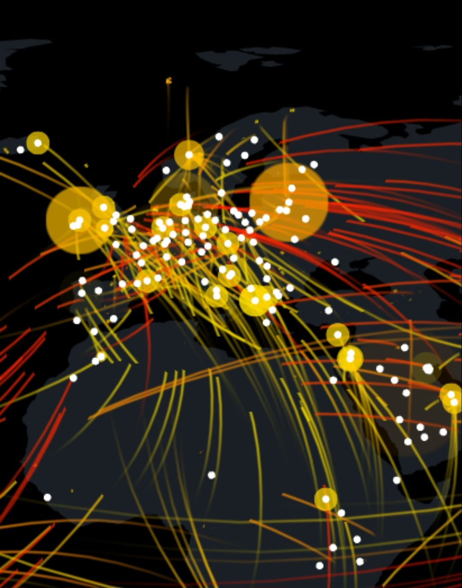

실시간으로 우크라 국내 랑 인근국가 데이터센터 DDOS로 뚜들겨맞는중
개드립서버나 기타 인터넷사이트들 속도 느린것도 이것영향인듯
잘못하면 클라우드플레어 뻗는거 볼지도
출처 : 넷스카우트

실시간으로 우크라 국내 랑 인근국가 데이터센터 DDOS로 뚜들겨맞는중
개드립서버나 기타 인터넷사이트들 속도 느린것도 이것영향인듯
잘못하면 클라우드플레어 뻗는거 볼지도
출처 : 넷스카우트
어떤서버는 우크라이나에 서버 놨는데 미사일 쳐맞았다고 어케든해본다는 영어공지떳다는 글도봄ㅋㅋ
러시아가 사이버공격 하는건가?
저거랑 딱히 상관 없을걸
클플이나 개드립 서버가 구대기면 느려짐
개드립 서버가 우크라에 있었구나 ㄷㄷ 아카라이브가 파라과이 서버던데 똑같은 처지였네